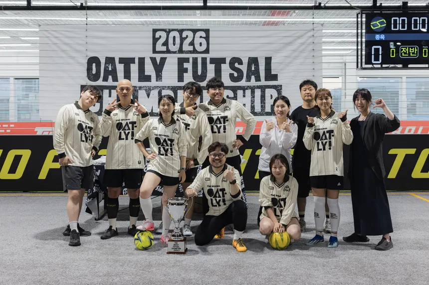
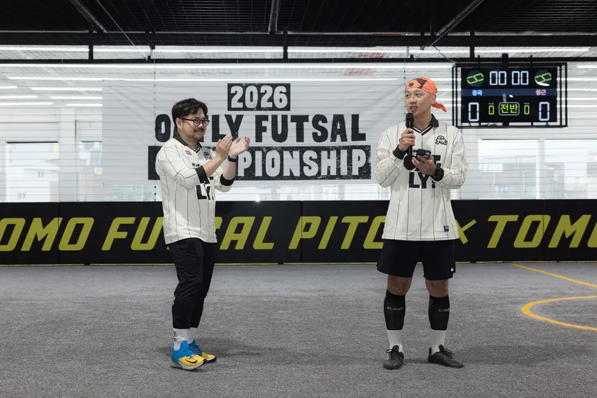

EST. 2024 · SEOUL
SOCCOFFEE 싸커피 · 서울 상암 풋살 클럽
싸커피 · FUTSAL CLUB
축구와 커피를 좋아하는 사람들
매달 WHITE · BLACK 두 팀으로 나눠 리그처럼 맞붙어요.






축구와 커피를 좋아하는 사람들이 2024년 9월에 만든 서울 상암의 혼성 풋살 클럽입니다. 매주 모여서 뛰고, 1년에 네 번 두 팀으로 리그를 치릅니다.
매주 수요일 밤 서울 상암 풋살장에서 모입니다. 팀 리그·일반 모두 21시부터 23시까지입니다.
괜찮습니다. 남녀가 같은 코트에서 함께 뛰는 혼성 클럽이고, 실력 티어를 반영해 두 팀의 밸런스를 맞추기 때문에 수준 차이가 있어도 재미있게 뛸 수 있습니다.
활동 인원을 정원제(남 24명, 여 12명)로 운영하고 있어 자리가 날 때 대기 순서대로 안내드립니다. 인스타그램(@soccoffee__) DM으로 문의해 주세요.
1년에 네 번, 감독 2명이 드래프트로 WHITE와 BLACK 두 팀을 꾸려 한 달 동안 리그를 치르는 싸커피의 시즌제 이벤트입니다.